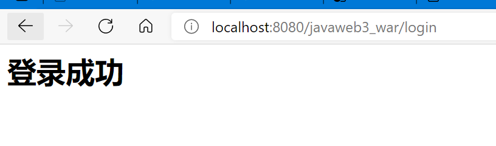

JavaWeb学习之路（三）——基本请求处理
接收参数
接收单个参数
1
String username = request.getParameter("username");
接收多个参数【前端使用checkbox等，产生数组】
1
String[] hobbies = request.getParameterValues("hobby");
设置请求转发
1 | request.getRequestDispatcher("success.jsp").forward(request, response); |

参考：重定向
1
response.sendRedirect("/hello/home.html");
请求转发是使用request，而重定向使用response。
请求转发状态码：302，重定向状态码：307。
请求转发url不会发生改变，重定向url会改变。
小Tip
处理中文显示乱码
1
2
3request.setCharacterEncoding("UTF-8");
response.setCharacterEncoding("UTF-8");
response.setContentType("text/html;charset-utf-8");
ConText
java web 中关于ConText的简介_码上人生的博客-CSDN博客
JavaWeb--ServletContext - 简书 (jianshu.com)
Cookie和Session
- 区别：cookie和session的详解与区别 - 测试开发喵 - 博客园 (cnblogs.com)
- cookie:信息在浏览器保存；session：信息在服务器保存
Cookie
Cookie:请求中获得到cookie，服务器响应。
一个web站点最多存放20个cookie，大小限制4kb，300个cookie浏览器上限。
```java Cookie[] cookies = request.getCookies(); if (cookies != null){ for (Cookie cookie : cookies) { if (cookie.getName().equals("lastLoginTime")) { long l = Long.parseLong(cookie.getValue()); Date date = new Date(l); writer.write("现在是"+date.toLocaleString()); } } } else { writer.write("第一次访问"); } Cookie cookie = new Cookie("lastLoginTime", System.currentTimeMillis()+""); cookie.setMaxAge(246060); response.addCookie(cookie);
1
2
3
- ```
Set-Cookie: lastLoginTime=1619883448706; Max-Age=86400; Expires=Sun, 02-May-2021 15:37:28 GMT删除cookie：设置一个同名cookie，有效期设置为0。
Session
服务器会为每位用户（浏览器）创建一个Session对象。一个Session独占一个浏览器。
session可以存储对象。
```java HttpSession session = request.getSession(); session.setAttribute("name", "HUII"); String sessionId = session.getId(); if (session.isNew()){ response.getWriter().write("创建成功"+sessionId); } else { response.getWriter().write("已存在"+sessionId); }
1
2
3
- ```
Set-Cookie: JSESSIONID=C222FB743499A0BA36C8B737CED42FFB; Path=/javaweb3_war; HttpOnly删除某个
1
session.removeAttribute("name");
手动注销，清除所有内容（同时生成新的）
1
session.invalidate();
<web-app> <session-config> <!--失效时间，以分钟为单位--> <session-timeout>15</session-timeout> </session-config> </web-app>